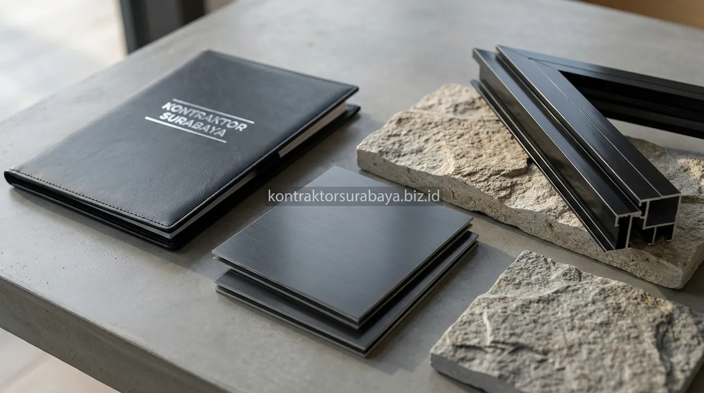

Memiliki hunian dengan tampilan tampak depan (fasad) yang sudah berumur puluhan tahun seringkali membuat kesan rumah terasa redup, kusam, dan ketinggalan zaman. Di kawasan metropolitan seperti Surabaya, renovasi fasad kini menjadi salah satu alternatif paling diminati para pemilik rumah: menghadirkan wajah baru yang segar dan bernilai jual tinggi tanpa harus merobohkan struktur inti bangunan atau mengeluarkan biaya bangun ulang dari nol.
1. Tanda-Tanda Fasad Rumah Perlu Direnovasi
Cat yang pudar, atap yang mulai bocor, retak rambut pada dinding, dan model fasad yang terasa ketinggalan zaman adalah tanda paling umum rumah perlu direnovasi.
- Cat Eksterior Mengelupas: Cat eksterior yang pudar atau mengelupas akibat paparan panas terik dan hujan membuat rumah terlihat kusam meski struktur dinding masih sangat kokoh.
- Atap Rembes dan Bocor: Atap yang mulai bocor atau rembes menandakan lapisan pelindung serta talang air sudah mengalami penurunan kualitas secara signifikan.
- Retak Rambut Dinding: Retak rambut pada dinding eksterior perlu dievaluasi dan diperbaiki sebelum dilapis ulang dengan finishing atau material baru.
- Gaya Ornamen Berlebih: Model fasad dengan banyak ornamen rumit, profil beton tebal, atau warna gelap pekat sering dianggap ketinggalan zaman dibanding gaya minimalis modern saat ini.
2. Perubahan dari Gaya Klasik ke Modern Minimalis
Transformasi fasad klasik ke modern minimalis umumnya menyederhanakan ornamen, mengganti warna gelap dengan palet netral, dan memperbesar proporsi bukaan kaca.
Rumah dengan gaya klasik biasanya memiliki banyak detail ornamen, pilar bulat besar, dan warna dinding yang pekat. Proses renovasi ke gaya modern minimalis umumnya menghilangkan ornamen berlebih, menyederhanakan garis fasad menjadi bidang-bidang tegas geometris, dan mengganti sebagian dinding masif dengan bukaan kaca lebar agar kesan rumah terasa jauh lebih ringan, lapang, dan kekinian.

3. Material Renovasi yang Direkomendasikan untuk Fasad Modern
Aluminium Composite Panel (ACP), batu alam tempel, cat waterproofing reflektif, dan kusen aluminium adalah material yang paling sering dipakai untuk renovasi fasad modern.
- Aluminium Composite Panel (ACP): ACP memberi hasil akhir yang sangat rapi, rata presisi, dengan pilihan warna serta tekstur variatif yang tahan lama terhadap cuaca ekstrem.
- Batu Alam Tempel: Menambah kesan natural dan elegan pada aksen tertentu fasad tanpa menambah beban berat pada struktur kolom eksisting.
- Cat Waterproofing Reflektif: Membantu menjaga tampilan fasad tetap bersih dari lumut sekaligus mengurangi penyerapan panas matahari berlebih ke dalam ruangan.
- Kusen Aluminium Modern: Menggantikan kusen kayu lama yang rentan keropos, lapuk akibat air hujan, atau melengkung karena suhu panas.
4. Proses Renovasi Fasad Tanpa Mengganggu Aktivitas Penghuni
Pembagian area kerja dan penjadwalan pekerjaan berdebu di luar jam istirahat penghuni membuat renovasi fasad tetap bisa berjalan tanpa mengganggu aktivitas rumah tangga sehari-hari.
Pekerjaan renovasi fasad umumnya dikerjakan dari sisi luar rumah menggunakan perancah (scaffolding) dan proteksi terpal penahan debu. Dengan demikian, area dalam rumah tetap bisa ditinggali dan digunakan seperti biasa selama proses perombakan berlangsung, menjaga privasi serta kenyamanan seluruh anggota keluarga.
"Renovasi fasad yang tepat tidak hanya mengubah tampilan visual menjadi modern, tetapi juga menyelesaikan masalah rembesan air dan meningkatkan sirkulasi udara alami rumah."
5. Faktor yang Memengaruhi Lama Waktu Pengerjaan Renovasi Fasad
Luas area fasad, tingkat kompleksitas desain, ketersediaan material, dan kondisi cuaca adalah empat faktor utama yang menentukan durasi pengerjaan renovasi.
- Luas Bidang Fasad: Luas fasad yang lebih besar atau rumah 2-3 lantai tentu membutuhkan waktu pengerjaan dan pemasangan scaffolding yang lebih panjang.
- Kompleksitas Desain: Desain dengan kombinasi beberapa material (misalnya paduan ACP, kisi-kisi conwood, dan batu alam) memerlukan ketelitian pemasangan lebih tinggi dibanding desain dinding acian polos.
- Ketersediaan Material: Material custom atau fabrikasi khusus terkadang memerlukan waktu pemesanan (lead time) sebelum siap dipasang di lokasi.
- Faktor Cuaca: Musim penghujan dapat menghambat pekerjaan yang memerlukan kondisi kering sempurna seperti aplikasi waterproofing dan pengecatan eksterior.
6. Kesalahan Umum saat Merenovasi Fasad Rumah Lama
Mengganti tampilan tanpa mengevaluasi kondisi struktur, memilih material tanpa mempertimbangkan iklim, dan mengabaikan waterproofing adalah kesalahan yang paling sering ditemukan.
- Menutupi Masalah Struktural: Mengganti fasad tanpa mengecek kondisi dinding retak dan atap eksisting berisiko menutupi kerusakan struktural yang belum terselesaikan di bagian dalam.
- Salah Pilih Material: Memilih material luar ruangan yang kurang cocok dengan iklim tropis lembap dan panas Surabaya dapat mempercepat kerusakan finishing fasad.
- Mengabaikan Waterproofing Sambungan: Tidak melapisi titik temu antara material lama dan panel baru dengan sealant atau waterproofing khusus berisiko memicu rembesan air saat hujan lebat.
- Lupa Menghitung Finishing Tambahan: Tidak memperhitungkan biaya finishing seperti pengecatan ulang dinding samping yang tidak direnovasi dapat membuat hasil akhir terlihat belang dan tidak menyatu.
Setiap rumah memiliki kondisi fasad dan struktur yang berbeda, sehingga pendekatan renovasi perlu disesuaikan melalui survei langsung sebelum menentukan material dan estimasi biaya. Lihat lebih banyak transformasi renovasi pada galeri proyek kami, atau pelajari cakupan layanan renovasi lengkap pada halaman jasa renovasi Surabaya.